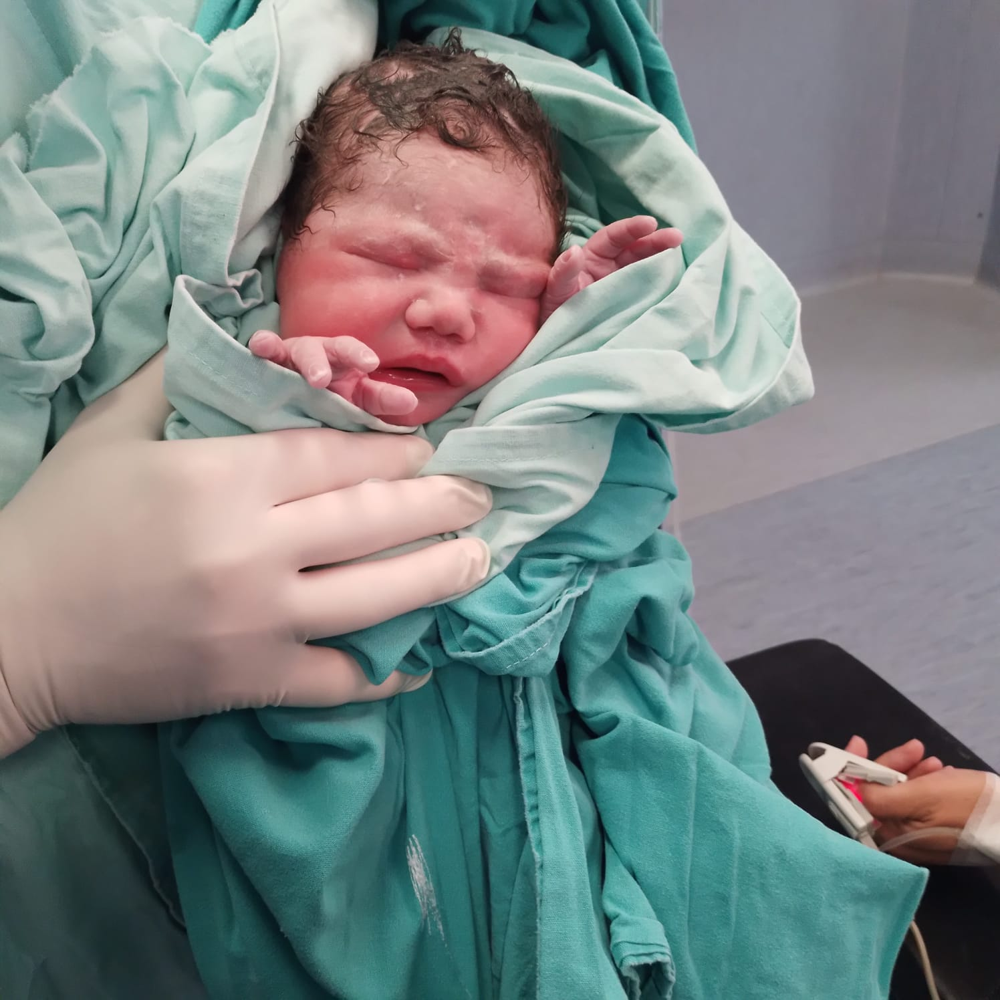
Llegaste.
Y de pronto, el tiempo empezó a medirse distinto.
Las noches fueron más largas.
Los abrazos, más fuertes.
Y la vida, muchísimo más hermosa.
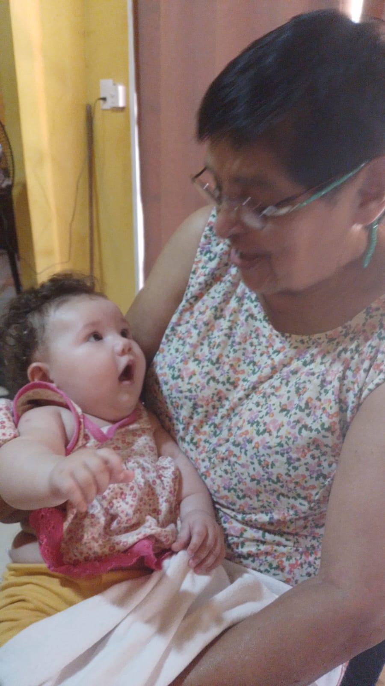
Descubriste.
La música, los animales, las miradas,
y la alegría de bailar
como si el mundo entero estuviera hecho para jugar.
Y sin darte cuenta, nos enseñaste otra vez
a maravillarnos con las cosas simples.
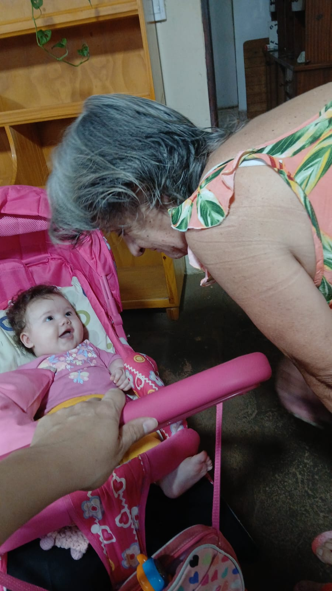
Primeros pasos.
En cada descubrimiento hay una lección.
En cada gesto, una enseñanza nueva.
No solo aprendés a mirar el mundo:
nos enseñás a verlo con tus ojos.
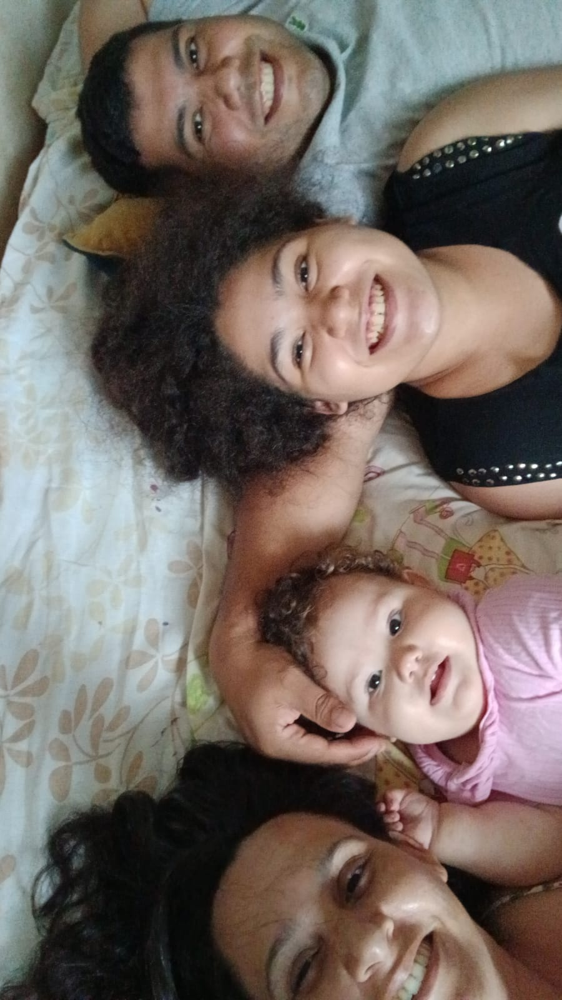
Familia.
A veces una familia no necesita demasiadas palabras.
Solo mirarse, reír juntos,
y entender que el amor
también vive en los pequeños momentos.
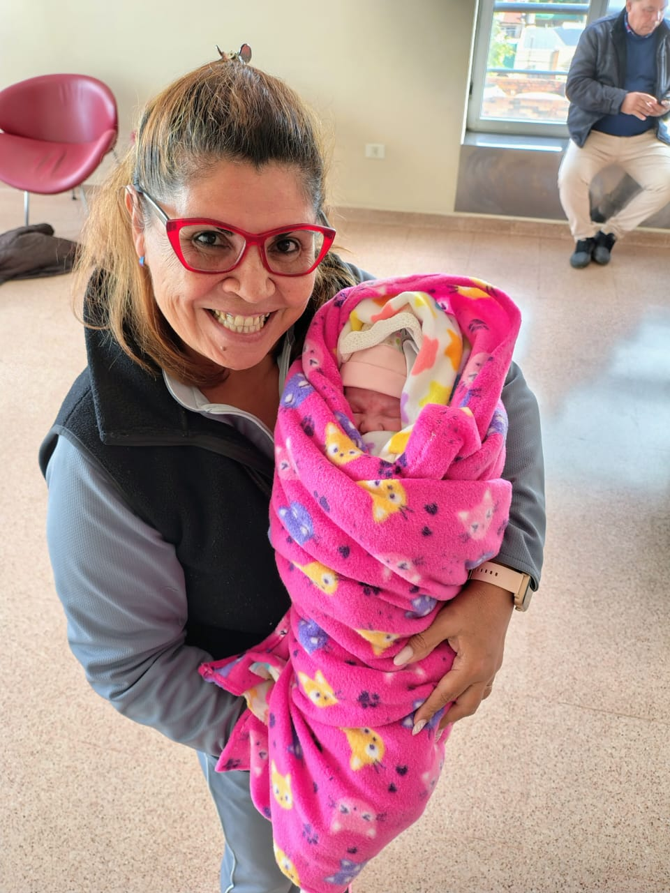
Abrazos.
Un abrazo tuyo alcanza para que todo cobre sentido.
Chiquito pero fuerte, lento pero profundo.
Un abrazo que dice
lo que mil palabras no pueden.
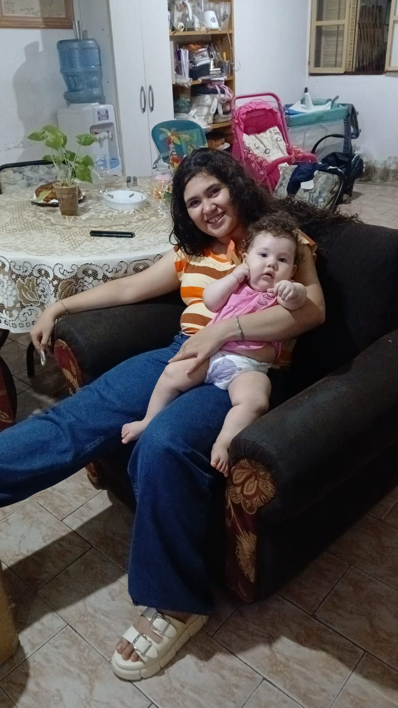
Conexión.
Sin hablar, entendías todo.
Sin pedir, sabías lo que necesitábamos.
La familia no es un lugar, es una mirada.
Y en la tuya encontramos el hogar.
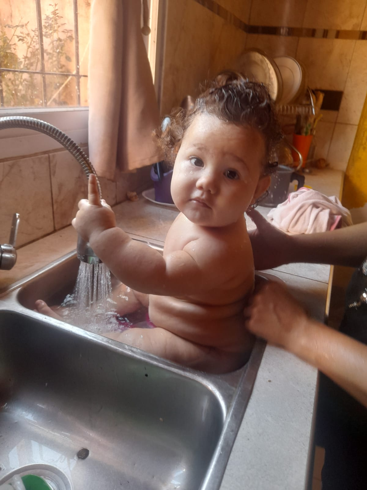
Humor.
Llegaste para desordenarlo todo:
las rutinas, el silencio, los planes.
Y aun así,
jamás imaginamos ser tan felices.
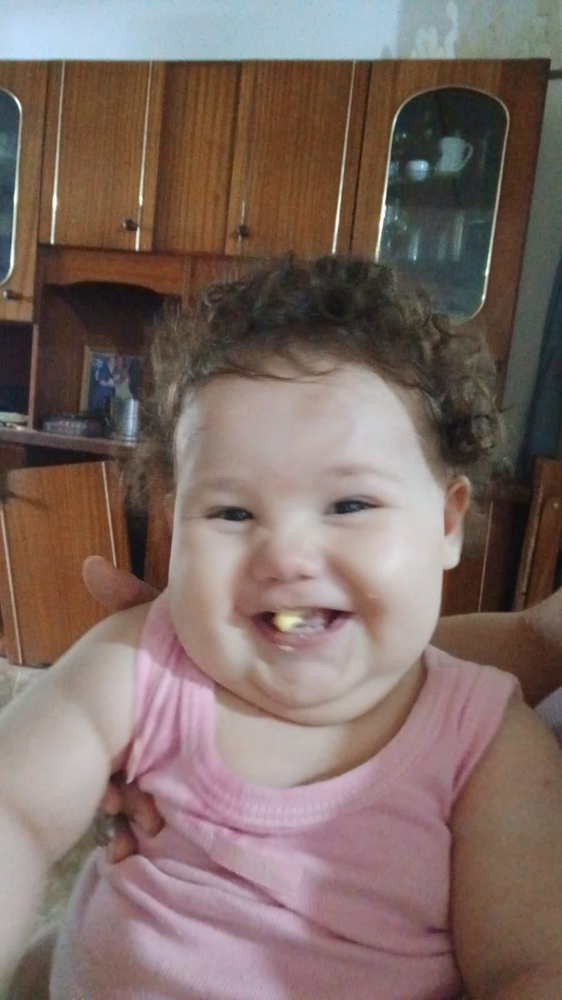
Carcajadas.
Tu risa es contagiosa.
Es imposible no sonreír cuando tu voz inunda la casa.
Convertís los días comunes
en momentos de pura alegría.
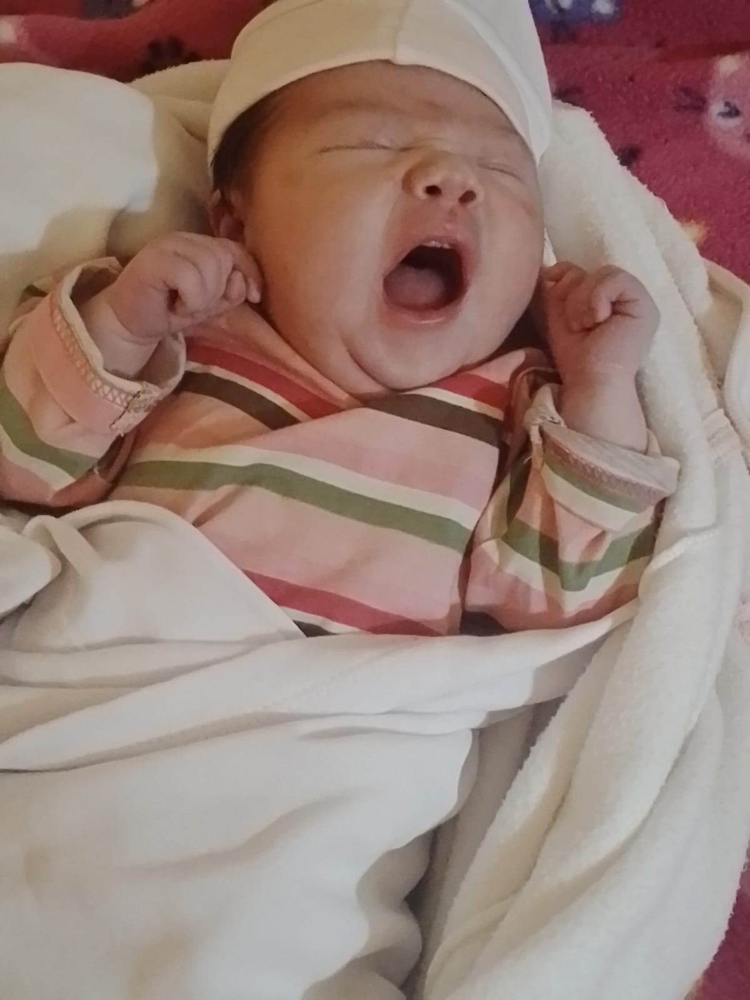
Juego.
Cada rincón es una aventura,
cada objeto, una historia nueva.
En tu mundo, todo es mágico.
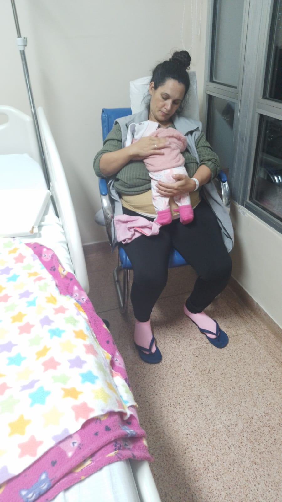
Recuerdos.
Sin darnos cuenta, empezamos a guardar instantes.
Fotos borrosas, risas espontáneas, abrazos al pasar.
Con los días, todo eso
se fue volviendo lo más importante.
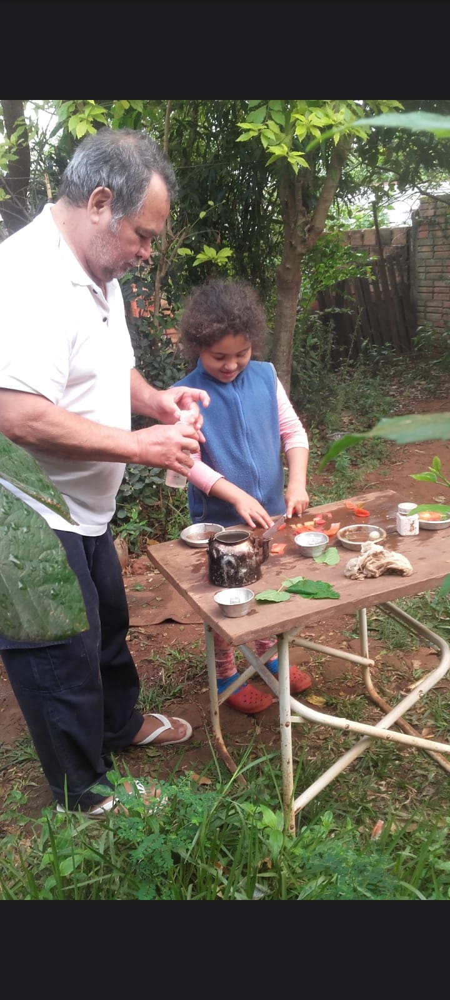
Instantes.
Cada foto es una ventana a un momento
que duró apenas unos segundos
y vamos a vivir para siempre.
Los recuerdos no se miden en horas.
Se miden en sonrisas.
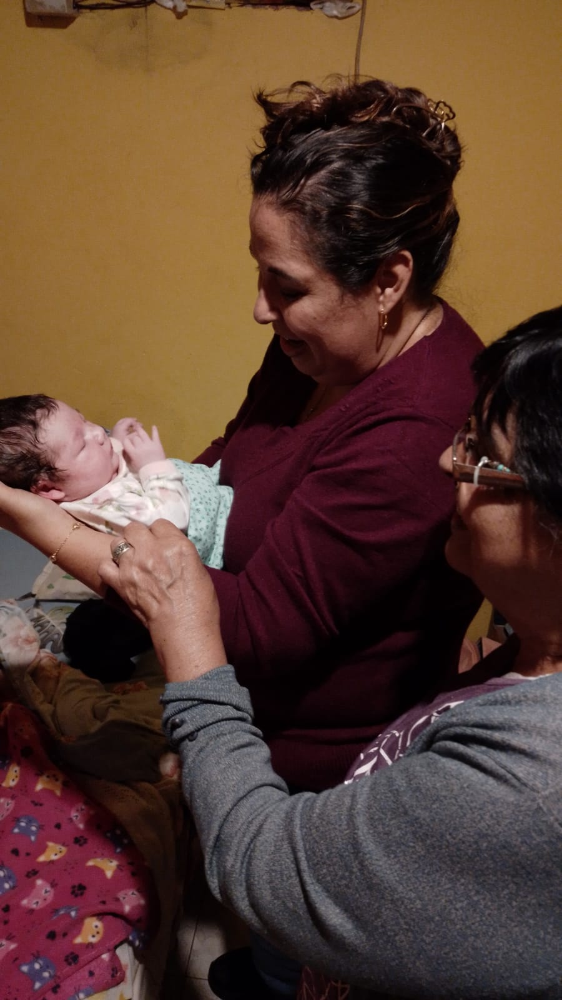
Detalles.
Los detalles son todo.
La forma en que dormís,
cómo sonreís en sueños,
tu manito agarrada a la nuestra.
Eso hace que cada día sea un regalo.
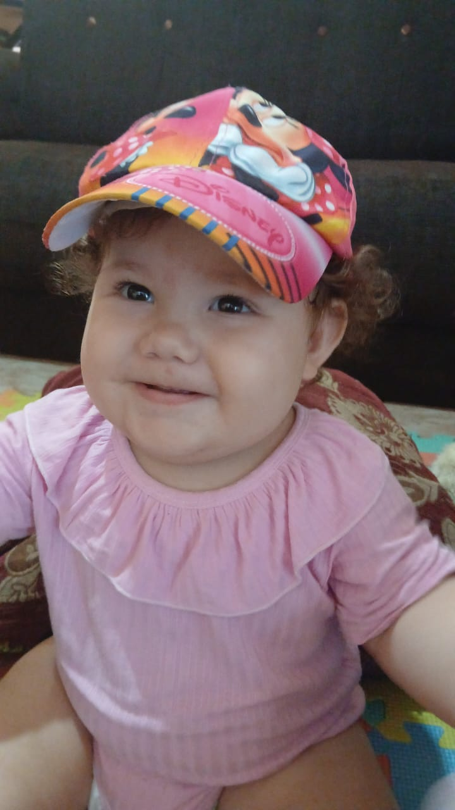
Shema.
Tu nombre ya existía antes de conocerte.
Con vos aprendimos lo que significa.
Luz, ternura, vida.
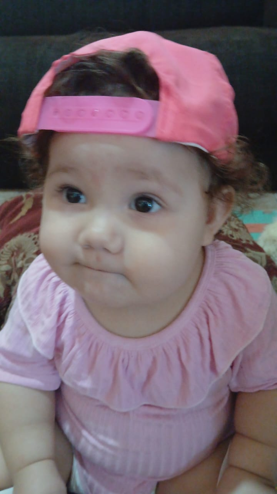
Aitana Shema.
“Llena de gloria, escucha.”
Gracias por estar en nuestras vidas.
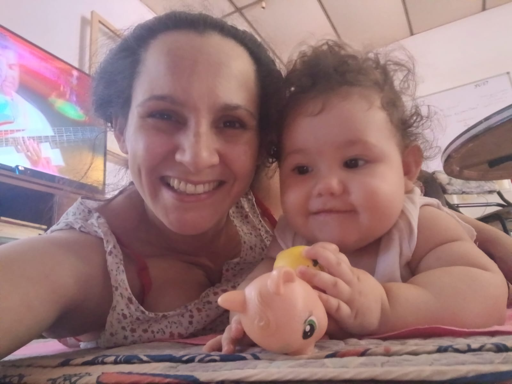
Esto recién comienza.
Gracias por regalarnos
el mejor primer año de nuestras vidas.
Con amor, mamá y papá